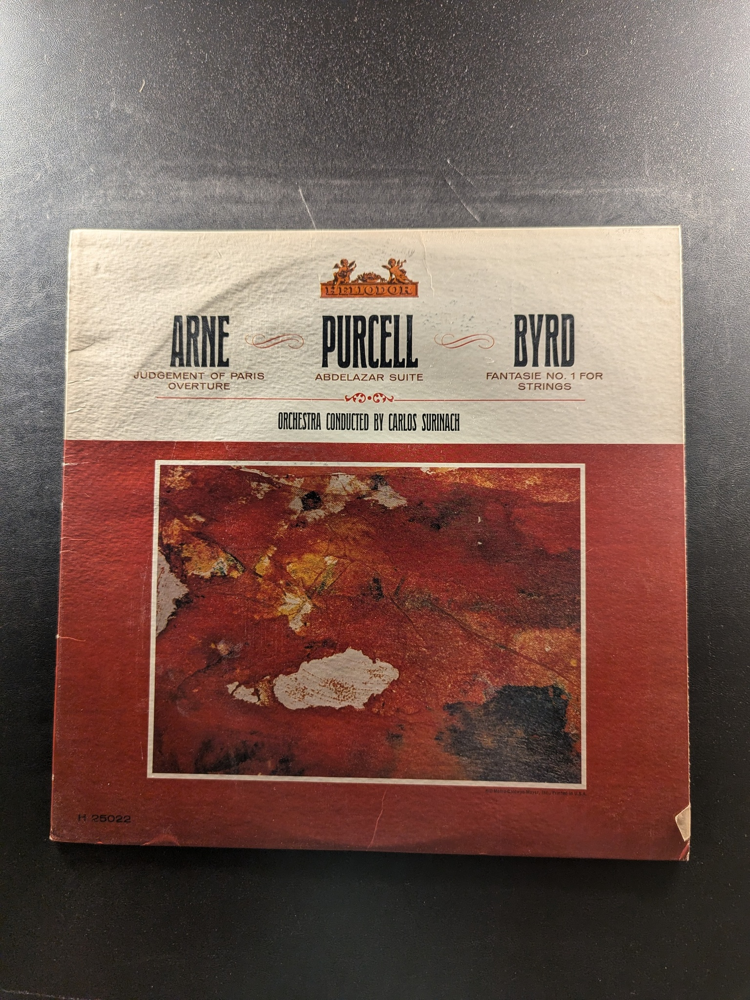

La Cetra
Vivaldi
Vanguard Everyman Classics SRV-159 SD
Te Deum
Michel-Richard de Lalande
Musical Heritage Society MHS 514

Requiem, K. 626
Wolfgang Amadeus Mozart
the musical heritage society inc. MHS 3357
Great Recordings of the Century
Wanda Landowska
Seraphim 60106
Gloria Kyrie Lauda Jerusalem
Antonio Vivaldi
Musical Heritage Society MHS 1488
Symphonie Espagnole, Op. 21 / Rhapsodie Norvégienne
Edouard Lalo
Musical Heritage Society MHS 1845
Overture to 'Costantino'
Johann Joseph Fux
The Musical Heritage Society Inc. MHS 901
6 Sonatas, Op. 5
Salvatore Accardo
Philips
Five Flute & Recorder Concertos
Vivaldi
Seraphim S-60062
Concerti, Sinfonie, Sonata for Strings
Antonio Vivaldi
The Musical Heritage Society Inc. MHS 3434
Midnight Mass for Christmas Eve
Marc-Antoine Charpentier
Angel S-36028

Music for Port-Royal (and First Tenebrae Lesson for Holy Wednesday)
Marc-Antoine Charpentier
Nonesuch H-71143
The Art of Ornamentation
Jean-Claude Veilhan, Guy Robert, Françoise Bloch
MHS 3800
Catulli Carmina
Carl Orff
Philips
Munrow & Marriner
David Munrow, Academy of St. Martin-in-the-Fields, Neville Marriner
Angel S-37039
Die Weihnachtsgeschichte / Prelude and Fugue in E Minor / Prelude in E Major
Arnold Melchior Brunckhorst / Georg Dietrich Leyding
Musical Heritage Society Inc. MHS 1732

Gilles Requiem
Gilles
Musical Heritage Society Inc. MHS 698
Judgement of Paris / Abdelazar Suite / Fantasie No. 1 for Strings
Arne / Purcell / Byrd
Heliodor H 25022

Water Music
George Frederick Handel
Nonesuch H-71132
Vocal and Instrumental Music
Alessandro and Domenico Scarlatti
Musical Heritage Society MHS 1443
Symphonien Nr. 6 D-Moll · Nr. 7 C-Dur
Jean Sibelius
Deutsche Grammophon 139 032
The Rite of Spring
Stravinsky
Mercury Wing SRW 18021
The Four Seasons
Vivaldi
Mercury Wing WC 18041
Concertos for Cello / Elegie
Gaspar Cassado, Bamberg Symphony
Period Records SPL 510
Sings Rossini and Mozart Arias
Ezio Flagello
Musical Heritage Society MHS 1725
{kind=link}
{kind=link}
{kind=link}
{kind=link}
{kind=link}
{kind=link}
{kind=link}
{kind=link}
{kind=link}
{kind=link}
{kind=link}
{kind=link}
{kind=link}
{kind=link}
{kind=link}
{kind=link}
{kind=link}
{kind=link}
{kind=link}
{kind=link}
{kind=link}